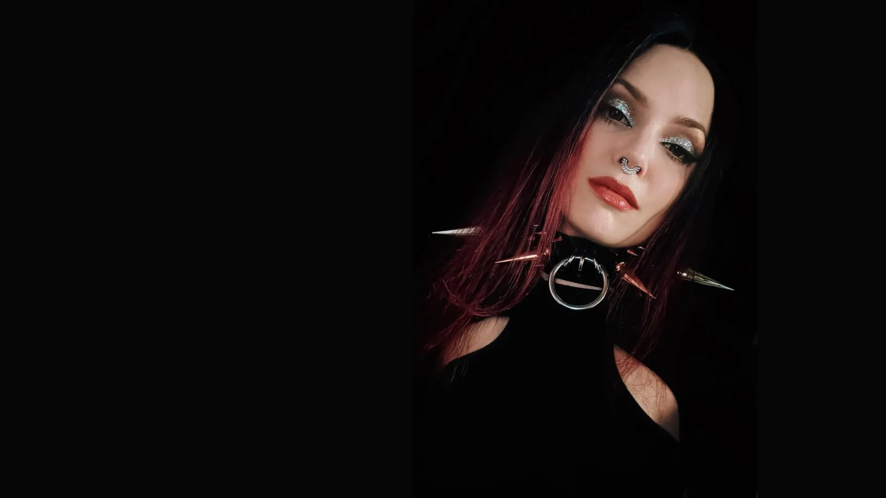
Татуировки в Москве: графика, дотворк, перекрытия
Рисунок по эскизу или сразу на коже. Дотворк - это рисунок из мелких точек, перекрытие - новая татуировка поверх старой.
Если рисунок нужен на вашей коже, начнём с разговора
Расскажите идею и место на теле. Эскиз, фрихенд или перекрытие - подберём вместе.
Рисунок, который живёт на коже
Цветы, птицы, сюжеты, рукава. У каждой работы своё название.
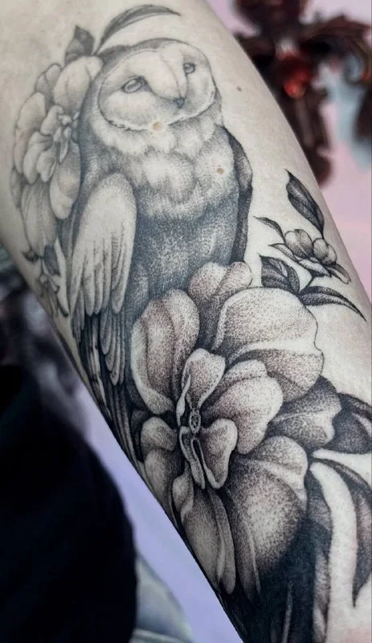
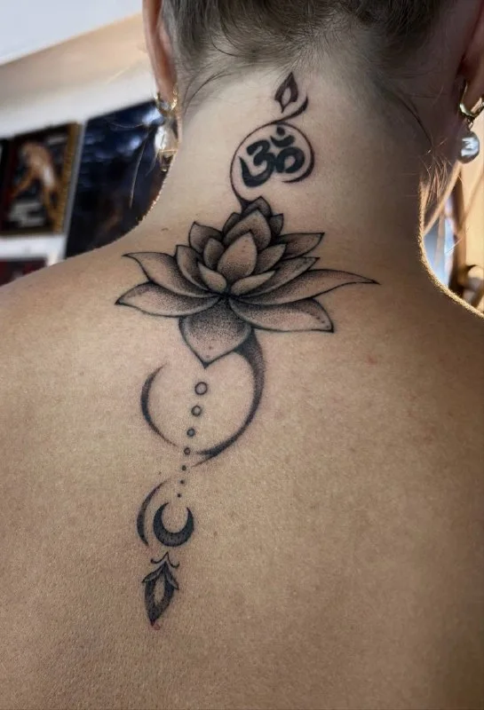
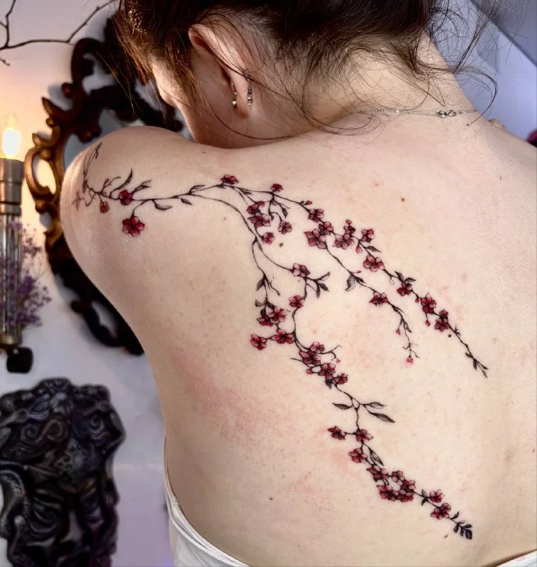
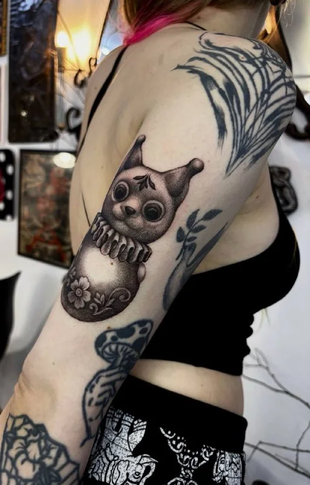
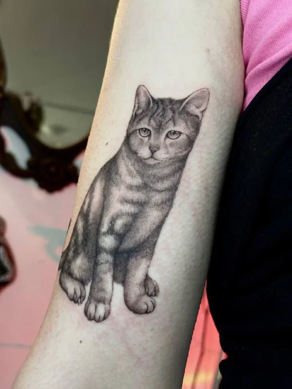
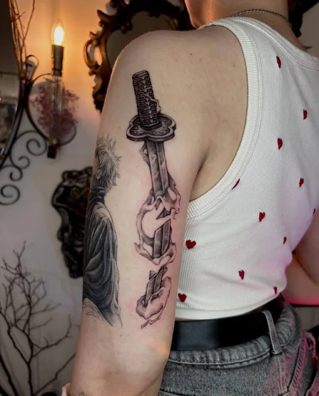
Больше работ - в канале
Свежие татуировки и зажившие, по мере того как они появляются.
Открыть каналСтарую татуировку можно обновить
Первая татуировка клиентки на шее, 2023 год. Спустя несколько лет к ней добавились новые детали. Так же работаю с перекрытиями: перерабатываю исходный эскиз и вплетаю старый рисунок в новый сюжет.
Старая татуировка, которая больше не нравится, - обычная история. Пришлите фото, и подумаем, что можно сделать.
Потяните ползунок: слева 2023 год, справа сейчас.
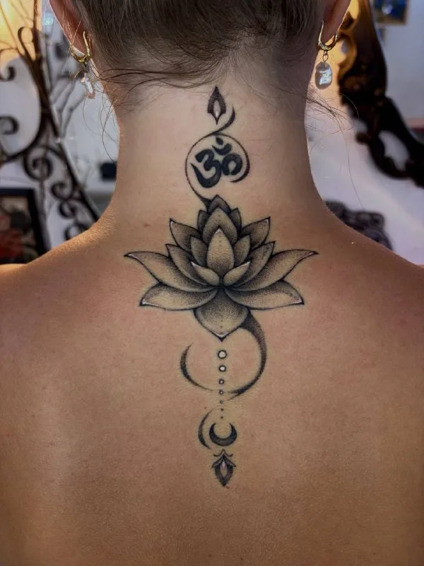
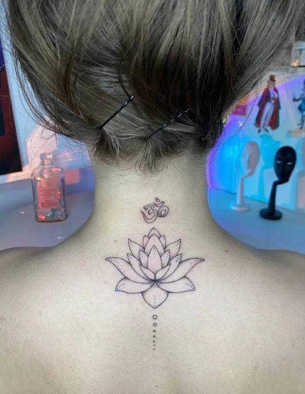
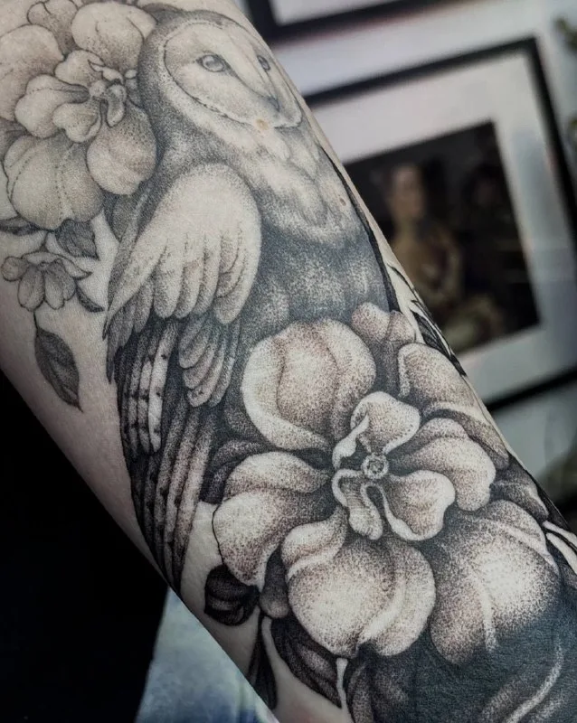
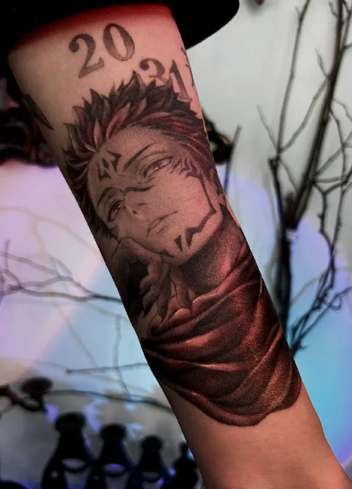
Работа видна, когда всё зажило
Показываю не только свежие татуировки, но и зажившие: так видно, как рисунок живёт на коже. Слева проект перекрытия, справа предплечье, в которое добавили красный.
«В бархатные зажившие текстуры добавили долгожданный красный»
Из канала Марии
Идея
Напишите, что хотите и где. Можно прислать картинку-пример или описать словами.
Эскиз
Подбираем сюжет и расположение. Иногда рисунок появляется сразу на коже, без переноса эскиза - это фрихенд.
Сеанс
Время и стоимость называем заранее, до начала работы.
Заживление
Расскажем, как ухаживать за татуировкой. Через время можно вернуться и дополнить.
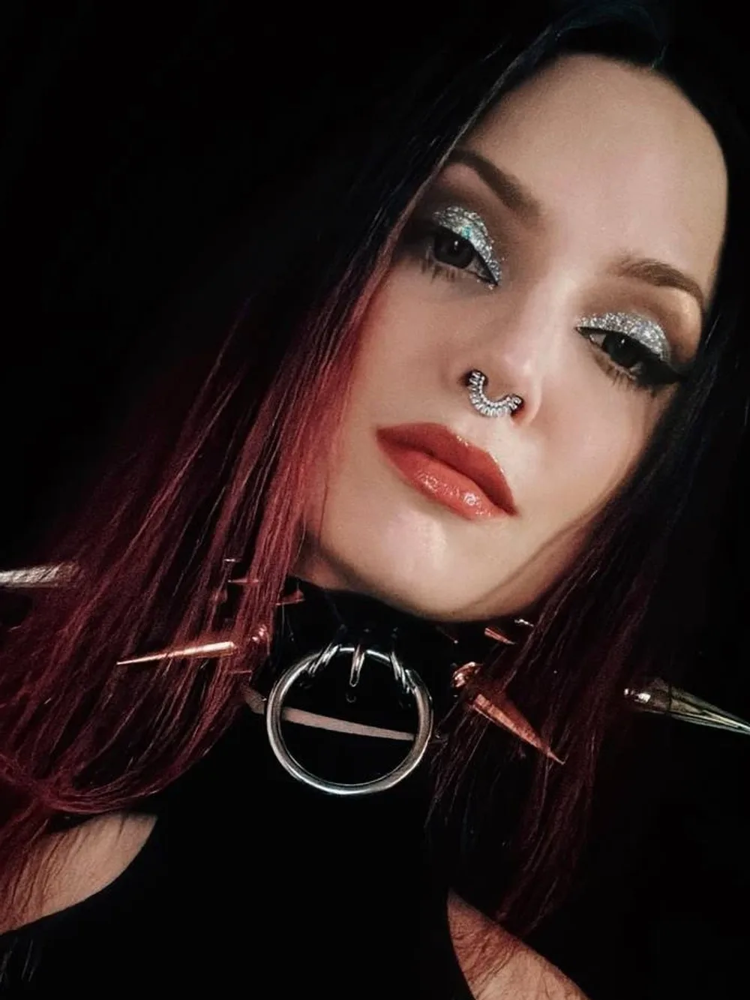
Мария, Nuer tattoo
Работаю в графике и дотворке (рисунок из мелких точек): цветы, животные, сюжетные композиции. Люблю перекрытия и рисунок сразу на коже, когда эскиз складывается вместе с вами.
- Стильчёрно-серая графика, дотворк, редкий красный акцент
- Форматынебольшие работы, рукава, перекрытия
- ГородМосква
Если это впервые
Коротко о том, что обычно спрашивают до записи.
Что написать в сообщении?
Идею своими словами, место на теле и примерный размер. Можно приложить картинку-пример. Например: «Хочу цветок на запястье, размером с ладонь, вот пример». Если не знаете, что хотите, так и напишите.
Что значат слова из заголовка?
Графика - рисунок линиями и штриховкой, как в книжной иллюстрации. Дотворк - рисунок из мелких точек, из них складываются тени и объём. Перекрытие - новая татуировка поверх старой. Фрихенд - рисунок, который появляется сразу на коже, без переноса эскиза. Эскиз - заранее нарисованный рисунок, который согласуют до сеанса.
Хочу перекрыть старую татуировку. С чего начать?
Сфотографируйте её целиком и крупным планом при дневном свете, без фильтров, и пришлите в сообщении. По фото станет понятно, что можно сделать. Цену перекрытия называют после просмотра фото.
Можно сначала просто спросить?
Да, напишите вопрос. Сообщение ни к чему не обязывает: после ответа можно спокойно подумать.
Стоимость называем до начала
- Небольшая работаот {{цена}} ₽Знак, надпись, небольшой рисунок. Размер и место определим по вашей идее.
- Сеанс{{цена}} ₽ / часДля крупных работ и рукавов оценка по эскизу.
- Перекрытиепо консультацииОценим по фото старой татуировки, его можно прислать в сообщении.
- Эскиз{{цена}} ₽Эскиз обсуждаем до сеанса, детали согласуем с вами.
Что важно знать
- Стоимость и время называем до начала работы
- Эскиз согласуем с вами до начала работы
- Как прислать идею: сообщением, можно с картинками-примерами
- Перекрытие оцениваем по фото старой татуировки
Напишите идею и место на теле
Ответим, предложим время для консультации и скажем, что понадобится.
Для перекрытия приложите фото старой татуировки. Свежие работы - в канале.